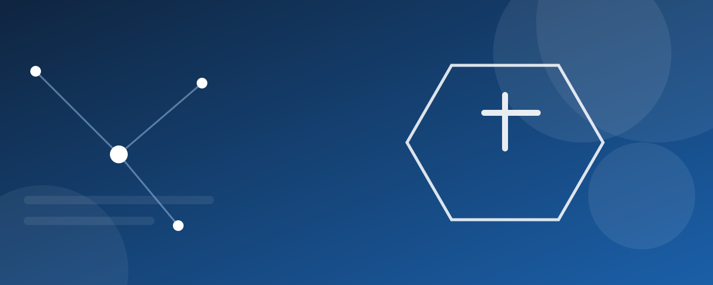

Про корпорацію
Нам довіряють 300+ проєктів Корпорація «НОВАТЕК» заснована у 2015 році групою українських ІТ-фахівців із метою створення національної технологічної компанії світового рівня, що розробляє власні програмні продукти, впроваджує штучний інтелект та захищає цифрову інфраструктуру держави й бізнесу. Ми об'єднуємо інженерів, науковців і підприємців, щоб створювати надійні цифрові рішення, які покращують життя людей і розвивають економіку України.
За понад десять років роботи корпорація реалізувала понад 300 проєктів для державного та приватного секторів, відкрила офіси у п'яти містах України та сформувала команду з 1200 фахівців. Ми пишаємося тим, що наші розробки використовуються у сфері освіти, охорони здоров'я, енергетики та оборони.
Детальніше про напрями роботи - на сторінці «Напрями діяльності», а історія команди - у розділі «Засновники» нижче.
Мета створення корпорації
Сформувати потужну українську екосистему високотехнологічних продуктів і послуг, яка забезпечує технологічну незалежність країни та виводить українські розробки на міжнародні ринки.
- Розробляти власні програмні продукти та платформи світового рівня.
- Впроваджувати технології штучного інтелекту в ключові галузі економіки.
- Забезпечувати кіберзахист об'єктів критичної інформаційної інфраструктури.
- Готувати нове покоління ІТ-фахівців через власну корпоративну академію.